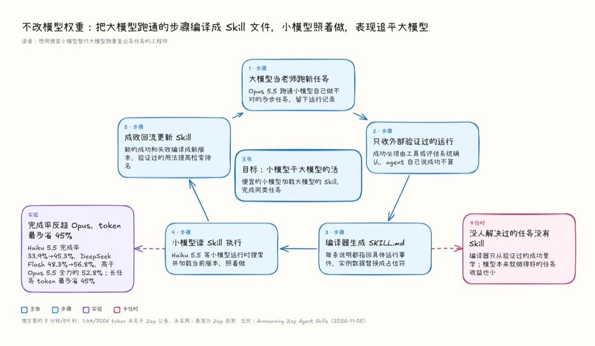
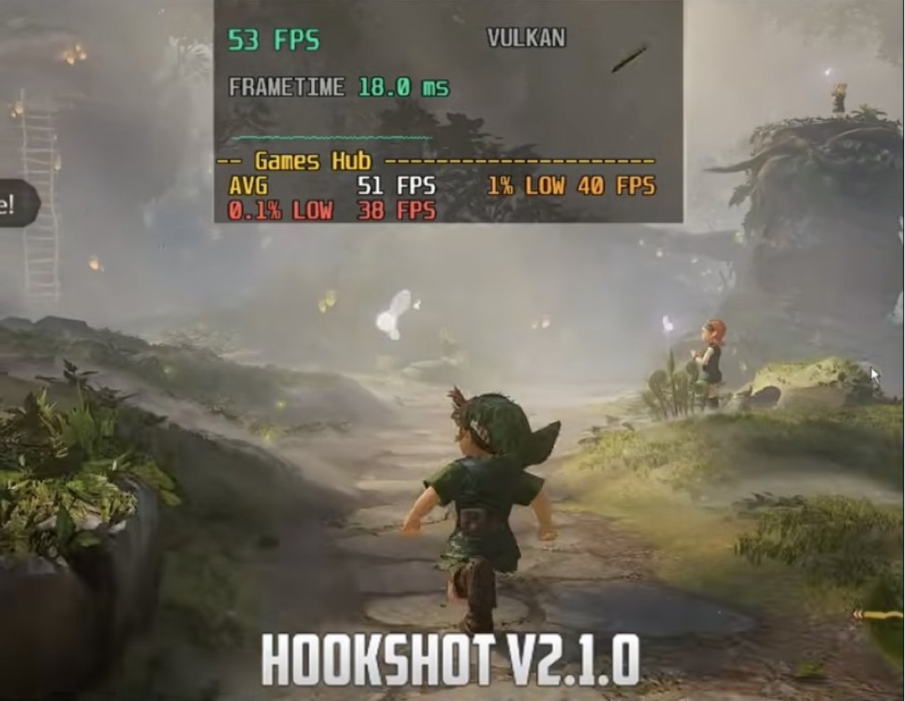
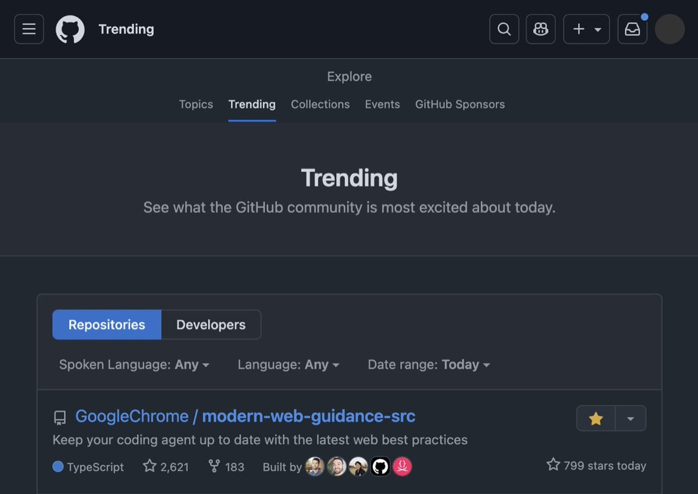
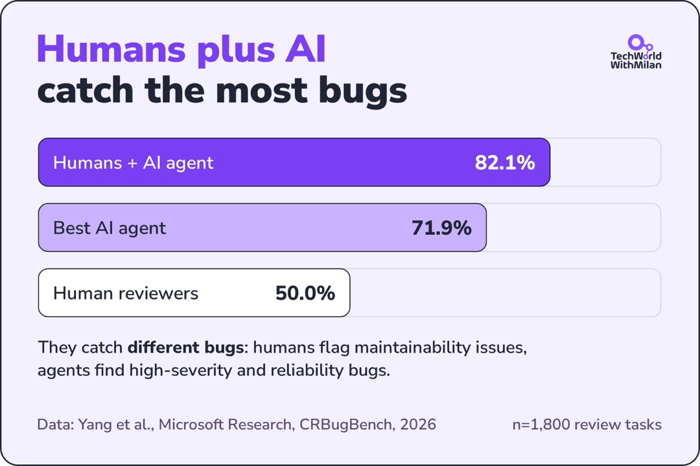

本期速览
01 Zep 把大模型经验编译成 Skill
02 Claude Code 评审代理不带历史
04 Modern Web 指南纠正AI旧写法
07 AI 代码审查实测检出71.9%缺陷
01｜Zep 把大模型经验编译成 Skill
来源（X） · @yibie · 2026-11-13 16:11
想让便宜的小模型替代昂贵的大模型，通常的办法是微调，要准备训练数据、再跑一次训练，换模型还得重来。Zep 发布的 Agent Skills 换了一个做法：不动模型，把大模型跑通任务的步骤编译成一个 SKILL.md 文件，小模型照着做。
具体是五步。先用 Opus 5.5 当老师，跑通一个小模型自己做不对的多步任务。然后只保留被外部验证过成功的运行，比如工具确认或评估系统打分，agent 自己说成功不算。编译器再把这些运行整理成 SKILL.md，每条说明都指回具体的运行事件，账户名这类实例数据替换成占位符。小模型运行时搜索并加载这个文件，照着执行。之后每一次成功和失败都会编译成新版本，验证过的用法提高检索排名。
Zep 在自己的 EnterpriseOps-Gym 基准上测的结果是，Haiku 5.5 加 Skill 后任务完成率从 33.9% 升到 45.3%，DeepSeek V4.1 Flash 从 48.3% 升到 56.8%，反而高于 Opus 5.5 全力跑的 52.8%。在长任务较多的 τ³-bench banking 上，每通过一个任务的 token 用量最多减少 45%。这些都是 Zep 自测的数字。
适用范围也有限。编译器只从验证过的成功里学，还没有任何 agent 解决过的任务不会产生 Skill；模型本来就做得好的任务，加上去收益也小。比较合适的，是那种 agent 会反复跑、小模型单独跑又老出错的多步流程。
原文链接在评论区
#小技巧

02｜Claude Code 评审代理不带历史
来源（X） · @xqliu · 2026-11-13 13:40
普通 subagent 启动时不带主会话的历史。Claude 替你写一条任务消息就把它派出去了，需求是什么、改了哪些文件，它只能自己猜。
10 月 17 号我对着官方文档把这套配置核了一遍。最省事的起点是一个只读的评审 agent，开头的配置就四行：
name: change-reviewer description: Review supplied changed files for behavioral bugs and missing tests. tools: Read, Grep, Glob model: sonnet
放进项目的 .claude/agents 目录，新开一个会话才会读到。委派的时候，把需求、改动文件的路径和 diff 一起贴给它。
还有一点容易忽略：它和主会话共用同一个工作目录，独立的上下文不会把文件冻住。报告回来之前，那几个文件先别动。
03｜Hookshot 把时之笛重编译为 PC
来源（X） · @HeLi8866 · 2026-11-13 16:11
有人做了个开源项目叫 Hookshot，把《塞尔达传说：时之笛》 Switch 2 版直接重编译成了 PC 程序 🔥
→ 才上线一周，GitHub 已经 8k 多星
→ Windows、Linux 都能跑
→ 不是模拟器，而是静态重编译成原生程序
开源的是这套工具，游戏本身没开源，得用你自己的正版拷贝来生成。
目前还在实验阶段，前面的流程能通，后面的关卡还有 bug 没修完。
仓库：
https://github.com/NotRexed/Hookshot

04｜Modern Web 指南纠正AI旧写法
来源（X） · @lencx_ · 2026-11-13 08:54
它由 Chrome、Edge、Firefox、MDN 团队和社区共同维护，以 Agent Skills 的形式接入编程助手。遇到相关任务时，Agent 通过 CLI 搜索、读取指南，按需把知识带进上下文。团队也会根据评测结果精简指南，减少模型已经掌握的重复内容。
举几个直观的例子：做弹窗和浮层，先考虑 <dialog>、Popover；多行输入框自动增高，可以评估 field-sizing: content；表单校验样式可以用 :user-invalid，避免用户尚未操作就显示错误状态。容器查询、View Transitions、INP 优化、键盘焦点管理，也都有对应的指导。
这些写法能不能用，还要看项目支持哪些浏览器。可以在 AGENTS.md 里写明 Baseline 目标，未设置时默认以 Widely available 为目标。对于目标浏览器尚未支持的能力，指南会给出渐进增强和降级方案；确实需要 polyfill 时，再按条件加载。
旧项目也用得上。legacy-scan 会先在本地解析代码，找出可能值得替换的旧写法，这一步不调用大模型。之后 Agent 再检查周围代码、核实结果，按指南修改并运行测试。目前扫描只覆盖部分能够通过规则识别的旧模式，命中后仍需要判断，尤其要分清过时写法和项目有意保留的兼容处理。
项目还会让 Agent 在有指南和没有指南的情况下完成同一任务，再用 Playwright 检查代码、浏览器中的实际行为和无障碍状态。哪些建议能改善结果，哪些内容已经多余，都可以根据对照评测继续调整。
经常用 AI 写前端的话，可以先拿一个现有组件试试：看看哪些交互逻辑可以改用原生能力，哪些兼容处理仍需要保留。安装命令是 npx modern-web-guidance@latest install，具体用法见官方文档。
相关链接：
- Blog: https://developer.chrome.com/docs/modern-web-guidance
- Repo: https://github.com/GoogleChrome/modern-web-guidance-src
引用内容
Chrome for Developers @ChromiumDev
中文译文
在发布1.0之后的48小时内，Modern Web Guidance已跃升为GitHub上排名第一的热门仓库 📈
感谢数千位Web开发者，以及来自Firefox、MDN、Edge的合作伙伴和社区贡献者，他们正帮助将AI编码代理引入到现代的、无障碍的、受Baseline支持的Web原语上来。
如果你还没有在你的代码库上试过1.0版本：
安装代理技能：'npx modern-web-guidance@latest install'
审计现有代码库：'npx modern-web-guidance@latest legacy-scan .'
在Github上查看仓库 → https://goo.gle/4zoi7Dv
原文
48 hours after launching 1.0, Modern Web Guidance is the #1 trending repo on GitHub 📈
Thank you to the thousands of web developers, and our partners across Firefox, MDN, Edge, and community contributors, who are helping move AI coding agents onto modern, accessible, Baseline-supported web primitives.
If you haven't tried 1.0 on your codebase yet:
Install the agent skills: 'npx modern-web-guidance@latest install'
Audit an existing codebase: 'npx modern-web-guidance@latest legacy-scan .'
Check out the repo on Github → https://goo.gle/4zoi7Dv

05｜EMQX Agents 事件驱动商用上线
来源（X） · @EMQTech · 2026-11-13 00:06
中文译文
#EMQX Agents现已正式商用可用！
用AI代理将 #MQTT 事件转化为自动化行动——这些代理能响应实时消息、查询历史遥测数据，并通过EMQX Broker发布结果。
符合条件的账户可享一个月免费试用：https://buff.ly/H8hq8Hf
原文
#EMQX Agents is now commercially available!
Turn #MQTT events into automated action with AI agents that react to live messages, query historical telemetry, and publish results through EMQX Broker.
Start with a one-month free trial for eligible accounts: https://buff.ly/H8hq8Hf
06｜NSH 画布代码可直接导出PNG
来源（X） · @huacnlee · 2026-11-13 16:32
可以让同一套 Canvas 绘图代码，既能在界面展示，也能按指定尺寸生成高清 PNG。
这样图表、白板、自定义绘图之类的场景，你可以用这个机制直接到出 PNG 图片。
https://github.com/longbridge/nsh
07｜AI 代码审查实测检出71.9%缺陷
来源（X） · @milan_milanovic · 2026-11-12 15:27
中文译文
我们还需要人工代码审查吗？
编码代理可以快速编写代码。那么下一个问题是：它们也能快速审查代码吗？
微软研究院的一个团队在CRBugBench上测试了十个模型，这是一个包含1,800个真实bug的新基准（1,000个来自98个GitHub项目，800个来自一家公司的代码）。表现最好的模型（Claude Opus 5，通过Copilot CLI）发现了71.9%的真实bug，每个bug耗时约十分钟、成本约三美元。五个月前，最好的模型才达到47.7%。
作为对比，人类在PR合并前大约能发现50%的bug。
当我们将人类和AI结合起来时，他们能发现82.1%的bug，因为AI更擅长发现高严重度和可靠性问题，而人类更擅长发现可维护性问题。
差异越大的diff对AI来说越难审查，这在预期之内。diff大小每增加一个标准差，发现bug的几率就降低约40%。修复bug的PR也比功能PR更难审查（几率减半）。
专有代码比开源代码更难审查（发现的bug最多减少25.5%）。其中在diff中可见的bug更少（22.8%，相比之下GitHub上为46.1%）。
代理有95.6%的时间打开了相关文件，但只有56.2%的时间识别出了bug。
在一个PR中（修复一个Selenium bug），每个模型都接受了一个有bug的条件，因为代码注释和PR描述都说它是正确的。
𝗠𝘆 𝘁𝗮𝗸𝗲𝗮𝘄𝗮𝘆𝘀
"熄灯工厂"场景（AI审查AI编写的代码）是可行的，但可能仅适用于小型、范围明确的PR。否则，请将AI作为你的审查者之一，并保持人工参与其中。
如果你想在你的组织中使用AI代码审查，我的建议是：
- 尝试将不同的PR路由给不同的审查者（在CRBugBench中，一个较小的模型以Opus 5成本的21%达到了其78%的分数）
- 要求更多、有排序的建议（优于成本高数倍的多代理设置）
- 提供更多仓库上下文
- 保留人工审查以关注可维护性问题并验证PR描述
原文
Do we still need manual code reviews?
Coding agents can write code fast. So the next question is: can they review code fast, too?
A team at Microsoft Research tested ten models on CRBugBench, a new benchmark of 1,800 real bugs (1,000 from 98 GitHub projects, 800 from one company's code). Their best performer (Claude Opus 5, via Copilot CLI) found 71.9% of real bugs, at about ten minutes and $3 each. Five months earlier, the best model was at 47.7%.
Humans, for comparison, find about 50% of bugs before a PR gets merged.
When we combine humans and AI, they find 82.1%, as AI is better at spotting high-severity and reliability bugs while humans are better at detecting maintainability issues.
Bigger diffs are harder for AI to review, which is expected. Each standard deviation increase in diff size corresponded to about 40% lower odds of finding the bug. Bug-fix PRs are also harder to review than feature PRs (half the odds).
Proprietary code was harder to review than open-source code (up to 25.5% fewer bugs found). Fewer of its bugs were visible in the diff (22.8%, compared to 46.1% on GitHub).
Agents opened the relevant file 95.6% of the time, but identified the bug only 56.2% of the time.
In one PR (fixing a Selenium bug), every model accepted a buggy condition because the code comment and the PR description said it was correct.
𝗠𝘆 𝘁𝗮𝗸𝗲𝗮𝘄𝗮𝘆𝘀
The 'lights-off factory' scenario (AI reviews AI-written code) is viable, but probably only for small, well-scoped PRs. Otherwise, treat AI as one of your reviewers, and keep a human in the loop.
If you want to use AI code review at your org, my recommendations are to:
- Experiment with routing different PRs to different reviewers (in CRBugBench, a smaller model reached 78% of Opus 5's score at 21% of the cost)
- Ask for more, ranked suggestions (outperformed multi-agent setups that cost several times more)
- Provide more repo context
- Keep a human reviewing for maintainability concerns and verifying the PR description

08｜FDE 调研陌生行业先查后问再试
来源（X） · @0xlangeai · 2026-11-13 16:29
真正能用的是几条硬规则。每个数字都要带出处和日期，查不到就写查不到。核验要另开一个没参与调研的 AI。作者写，自己不懂行的时候，AI 说什么都像是对的。
他举了个流行说法：「95% 的企业 AI 试点失败」。追到的是 MIT 2025 年 7 月一份未同行评审的初步报告，原文是「95% 的组织没有拿到回报」，说不出失败了多少个试点。作者还说，8 月查 FDE 时核了 35 条结论，有 11 条被修正或降级。这是他的自述，文里没有公开清单。
他的判断也写得很清楚：看好企业 AI 落地方向，但对新人单干把 FDE 做成独立生意并不太乐观。交付和经营是两回事。下判断时，先想清楚亏得起多少。
https://x.com/situking/status/2121085951648903357
引用内容
司徒K @situking
所以这篇文章，我会用波特五力模型、客户开发、效果逻辑这三套经典方法作为理论基础，配上 9 个 AI 提示词，以企业 AI 落地为例，给大家讲透我进一个陌生行业时是怎么调研、怎么迈出第一步的。 https://x.com/i/article/2121077695069184000